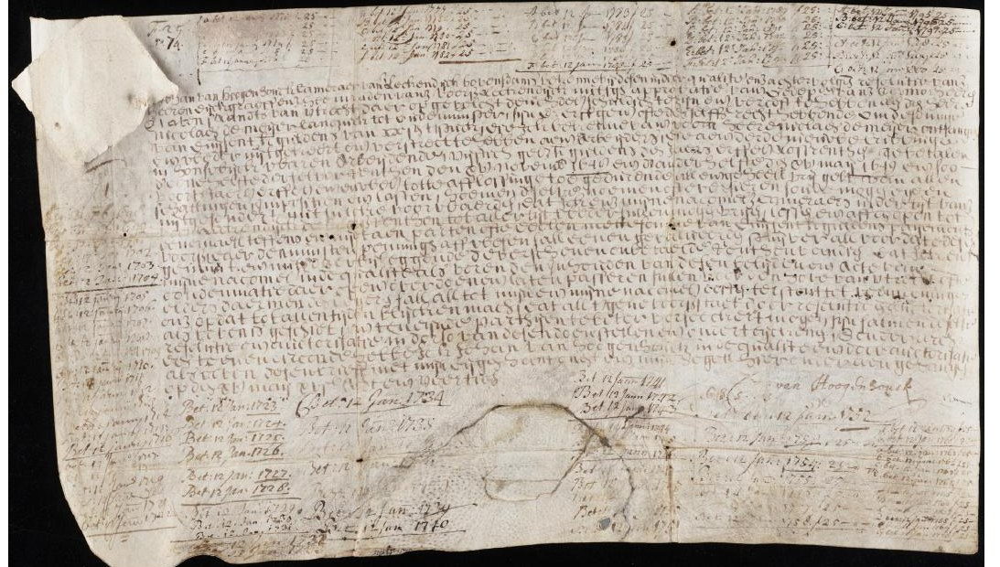
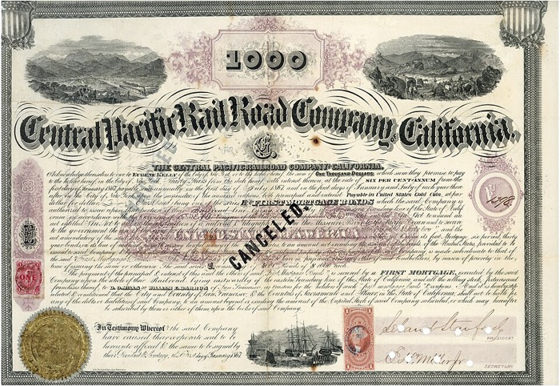

Chapter I
Capital Markets and Investment Performance
Returns, risk measurement, the equity premium, and historical capital markets data.
Overview
Securities are contractual promises of future payment or delivery, standardized so that they can be traded on exchanges. There are three main types of financial security: bonds, which promise fixed future payments; stocks, which promise a future, unspecified stream of dividends; and derivative contracts, which specify a payment or the delivery of a security contingent on future events.
Key Concept
All securities, no matter how complex, share one essential feature: they are economic claims against future benefits, and therefore always incorporate a time dimension.
Capital Market History
The first bond market began in Venice, where from the twelfth century the Republic raised money from its citizens through forced loans in return for future repayment with interest. In 1262 these loans were consolidated into a single funded debt, the Monte Vecchio, whose shares — the prestiti — paid 5% annual interest and changed hands in the Rialto marketplace. It was the first true secondary market in a government security.
The earliest corporations emerged in fourteenth-century Toulouse, where investors held and traded shares in large-scale milling companies, collecting dividends that varied with the firm’s profits.


Amsterdam was the first active stock market: the Dutch East India Company was a national enterprise with hundreds of shareholders and busy speculators. It also issued tradable bonds — the first corporation to do so — and Amsterdam is the likely birthplace of traded options, the derivatives that give their owner the right to buy or sell shares of stock.
These early securities could endure for centuries. A perpetual bond issued in 1648 by the Lekdijk Bovendams water authority in the Netherlands — now among the treasures of Yale’s Beinecke Library — has its margins covered with interest payments recorded over hundreds of years, and it is honored still.

Most securities traded before the nineteenth century were bonds, typically issued by governments. But the first widespread stock-market bubble swept Europe in 1719 and 1720. Variously called the South Sea Bubble, the Mississippi Bubble, or the Dutch Windhandel, it was sparked by speculation in Atlantic trade and by promising new technologies and financial innovations at the dawn of the Industrial Revolution.

The modern era of capital markets dates to the late nineteenth century, spurred by the global expansion of railroads, which demanded massive capital investment. Nations and corporations turned to the stock and bond markets to finance large-scale infrastructure — and expensive wars. London was the dominant marketplace of the nineteenth century, alongside a constellation of European exchanges in Paris, Brussels, Berlin, and Saint Petersburg. American markets overtook those of Europe in the twentieth century, and much of what we know about the risk and return of stocks, bonds, and options comes from records of American marketplaces — the New York Stock Exchange and the Chicago Board Options Exchange.
The global expansion of finance in the twenty-first century, particularly in India and China, has vastly enlarged the supply of capital, increased the number of investors enormously, and afforded all investors the opportunity to diversify globally. The tools we explore in this text are the foundation of the decisions those investors face.
I. Time and Money
Almost everything in this book comes back to one humble observation: a dollar today is worth more than a dollar tomorrow. Offer someone a dollar now or the same dollar in a year and they take it now — and they are right to. A dollar in hand can be put to work and grow; a dollar merely promised must be waited for, and the wait is neither free nor certain. This is the time value of money, and learning to compare sums that arrive at different times is the first real skill of finance.
The idea takes a moment to grasp, and it helps to see that it runs in both directions at once. Suppose money can be invested to earn an interest rate $r$. Then:
- If I lend you a dollar today, I give up the growth it would have earned — so to make me whole, you must repay more than a dollar next year. At a rate $r$, you owe me $1+r$.
- And if you promise to pay me a dollar a year from now, that promise is worth less than a dollar today — because I could instead hold a dollar now and grow it myself. To value the promise I run the growth backwards, or discount it: a dollar next year is worth $1/(1+r)$ today.
The two are one fact seen from opposite ends. Growing carries money forward in time; discounting brings it back. The amount a future payment is worth today is its present value:
Present Value of a One-Period Cash Flow
$$PV=\frac{C}{1+r}$$where $C$ is the cash to be received next period and $r$ is the interest rate. At a rate of 5%, a dollar due next year is worth about ninety-five cents today ($1/1.05 \approx 0.95$). You would rationally part with about ninety-five cents now for a sound promise of a dollar in a year — and the higher the rate, the less you would pay, because the more your own money could have grown while you waited.
Many Periods: The Exponential Curve
Stretch the wait to many years and the logic compounds. A dollar today grows to $(1+r)^t$ after $t$ years, so a dollar promised $t$ years out is worth $1/(1+r)^t$ today. Both are exponential curves — one soaring, one decaying — and they are the same curve read in opposite directions. Set the rate below and watch either one: how a dollar grows if you invest it, or how little a distant dollar is worth if you must wait for it.
Figure 1.1. The value of money across time. Set the interest rate and slide the horizon. In its default view the curve shows what a single future dollar is worth today: it begins at a full dollar now and decays toward nothing the farther off the payment lies — and the higher the rate, the faster it falls. Flip the switch to run the same exponential forward, and it becomes the compound-growth curve, what a dollar invested today becomes. Discounting and growing are one curve read in two directions.
Discounting Is Perspective
Here is a picture I like to draw for it. Imagine driving a long, straight highway across the desert toward a distant range of mountains. Billboards line the road. The one you are passing looms enormous; the next is smaller; the ones near the horizon have shrunk to postage stamps. Now suppose each billboard is a dollar you have been promised — one now, one in five years, one in ten, and so on down the road. The far ones look smaller for the very reason they are worth less: distance. The interest rate is simply how fast the billboards shrink as they recede — a high rate is a steeply narrowing road that dwindles the far dollars almost to nothing, a low rate a gentle perspective in which even distant dollars stay nearly full size.
Figure 1.2. Discounting as perspective. Picture driving a desert highway toward the horizon; each billboard is a dollar you have been promised — one now, and the rest at five-year intervals down the road. The far ones look smaller for exactly the reason they are worth less: distance. Here the rate is 5% a year, so the dollar due in twenty years has shrunk to about thirty-eight cents. The interest rate is simply how fast the billboards dwindle as they recede.
That is the whole idea, and the rest of the book is built on it. The price of a bond is the discounted value of its coupons and principal; the value of a stock is the discounted value of its future dividends; the return an investor demands is precisely the rate that makes a security’s distant dollars worth its price today. So before we turn to risk and reward, keep the highway in mind: money has a time dimension, and to compare money across time is to bring it back down the road to what it is worth right here, right now.
II. Finance from the Investor's Perspective
This module shifts focus from corporate decision-making to the investor's perspective. We examine how shareholders and bondholders who hold portfolios — collections of different securities — make financial decisions. The central question addressed is:
What rate of return will investors demand to hold a risky security?
That single question — how much extra return investors demand as compensation for risk — runs through the whole book, and this chapter does not yet fully answer it. It takes the first steps: defining return, measuring the historical record, and naming the reward for bearing risk (the risk premium, Section VII). The complete answer — how the market itself sets the price of risk — is built over the chapters that follow, through diversification and the efficient frontier and the asset-pricing models beyond. Keep the question in view: nearly every tool in this text is, in the end, an attempt to answer it.
III. Why Investors Invest
Primary motivations for purchasing securities include savings for future needs and wealth accumulation. Some investors accept high-risk ventures, such as lottery tickets, for potential significant payoffs. Additional motivations include charitable objectives, though these generate non-economic dividends and prove difficult to evaluate systematically.
IV. Definition of Rates of Return
Return is the growth in wealth an investment produces, expressed as a percentage so that investments of any size can be compared. The basic formula measures the change in price relative to what you paid — click any part of the equation to see what it does:
👈 click a term — the choice of denominator is the subtle, powerful one
That denominator is worth pausing on. Dividing by the original price is what turns a dollar gain into a rate — a number that means the same thing whatever the sum invested, and so can be compared across investments of any size. It is a small move with a large payoff: it makes return generalizable.
Most securities also pay cash along the way. Adding those dividends to the price change gives the total return:
V. Arithmetic vs. Geometric Rates of Return
Over many periods there are two ways to average returns, and they answer different questions. Click through each formula to see what it is really doing:
👈 click a term to name it
👈 complicated on the surface — tap each piece and it comes apart into four simple ideas
Consider an illustrative example: $P_0 = \$100$, $R_1 = -50\%$, $R_2 = +100\%$. After the first period, wealth falls to $50; after the second, it returns to $100. The arithmetic average return is $\frac{-50\% + 100\%}{2} = 25\%$, but the geometric average is $\sqrt{(0.50)(2.00)} - 1 = 0\%$.
Key Concept: Arithmetic vs. Geometric Returns
The geometric return better reflects the actual investment experience (compound growth), while the arithmetic return suits single-period statistical models. The geometric mean is always less than or equal to the arithmetic mean, with the gap increasing as volatility rises.
VI. A Century of U.S. Asset Returns
Over the full century from 1926 through 2025, a dollar invested in large-cap U.S. stocks (the S&P 500 and its predecessors) grew to roughly $14,750 — and a dollar in small-cap stocks to about $32,400 — while a dollar in long-term government bonds grew to only about $117, and in 30-day Treasury bills to about $25. Over the same span consumer prices rose roughly eighteen-fold. The stock lines display far greater volatility than the bond lines, but the terminal-wealth difference is enormous — the power of compounding a higher average return over a long horizon.

Figure 1.3. Growth of $1 invested in U.S. stocks, bonds, and Treasury bills (1926–2025, log scale). Computed from SBBI data. Stocks dramatically outperform bonds over long horizons, but with substantially greater year-to-year volatility.
VII. The Risk Premium
The return differential between stocks and bonds is attributed to risk differences. "Volatility" describes the shakier performance of stocks compared to bonds. Investors are risk-averse — they prefer less risk when other factors remain equal. This motivates the concept of the risk premium: the additional return demanded for holding risky securities versus riskless alternatives like Treasury Bills.
Equity Premium
$$\text{Equity Premium} = \bar{R}_{\text{stocks}} - \bar{R}_{\text{T-bills}}$$From 1926–2025, the equity premium (large-cap stocks over 30-day Treasury bills) was approximately 8.5% (arithmetic) or 6.8% (geometric) annually.
Summary Statistics (1926–2025)
| Investment | Geometric Mean | Arithmetic Mean | Std. Dev. | High Return | Low Return |
|---|---|---|---|---|---|
| Large-Cap Stocks (S&P 500) TR | 10.07% | 11.85% | 19.04% | 49.9% | −43.3% |
| U.S. Small-Cap Stocks TR | 10.95% | 14.44% | 27.69% | 115.7% | −50.1% |
| LT Govt. Bonds (20Y) TR | 4.88% | 5.40% | 10.62% | 41.8% | −27.2% |
| IT Govt. Bonds (5Y) TR | 4.84% | 5.00% | 5.91% | 29.7% | −9.5% |
| U.S. 30-day T-Bills | 3.26% | 3.30% | 3.09% | 15.1% | −1.7% |
| Inflation (CPI) | 2.94% | 3.01% | 3.92% | 18.1% | −10.3% |
Source: SBBI series, 1926–2025 (Ibbotson, Exponential Wealth, forthcoming 2026). High/Low columns are the best and worst single calendar-year total returns.
VIII. Standard Deviation as a Measure of Risk
Standard deviation quantifies volatility mathematically as the square root of the variance. It calculates the average spread of observations around the mean:
Standard Deviation
$$\sigma = \sqrt{\frac{1}{T-1}\sum_{t=1}^{T}\left(R_t - \bar{R}\right)^2}$$For large-cap stock returns (approximately $\sigma = 19.0\%$), assuming a normal distribution, approximately two-thirds of observations should fall within one standard deviation of the mean:

Figure 1.4. Distribution of large-cap stock annual returns (1926–2025), computed from SBBI data. The histogram shows the ±1 standard deviation range containing roughly 68% of observations. Actual return distributions exhibit "fatter tails" than the normal distribution predicts.
Limitations of Standard Deviation
The chapter acknowledges several limitations:
- Standard deviation equally weights high and low returns
- It heavily weights extreme observations
- It ignores distribution shape (skewness and kurtosis)
However, the benefits include providing a single comparable risk measure enabling portfolio analysis decisions.
There is evidence that stock returns may follow "stable" distributions with undefined variance rather than normal distributions, a hypothesis advanced by Benoit Mandelbrot. Return distributions show "fatter tails" than log-normal predictions suggest — extreme events (both positive and negative) occur more frequently than a normal model predicts.
Key Concept: Standard Deviation as Risk
Standard deviation provides a single, comparable measure of risk that enables systematic portfolio analysis. Despite its limitations — especially its assumption of symmetric, normally distributed returns — it remains the foundational risk measure in modern portfolio theory.